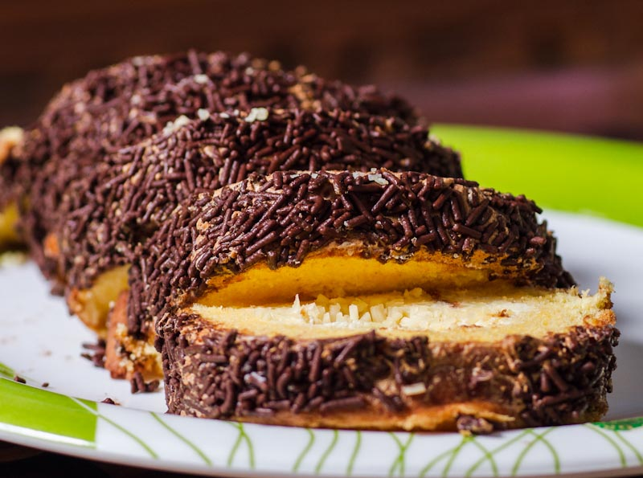
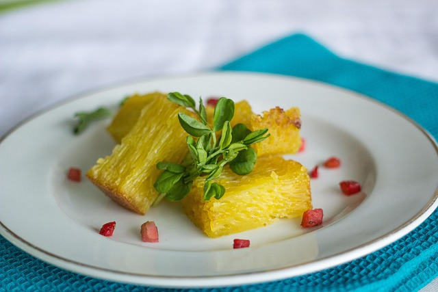
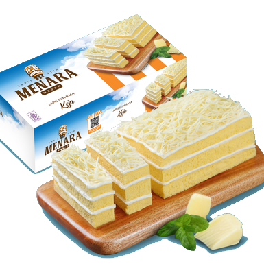

Bolu Meranti
Bolu gulung lembut dengan berbagai isian seperti keju, cokelat, mocca dan beberapa varian rasa lainnya.

Bika Ambon
Kue bertekstur berongga dengan rasa manis, aroma pandan dan santan yang khas. Cocok dijadikan oleh-oleh.

Bolu Stim Menara
Bolu modern yang dimasak dengan cara dikukus (stim), bertekstur super ringan dengan isian tebal.

Sirup Kurnia Raspberry
Sirup legendaris dengan rasa raspberry khas, dibuat menggunakan gula asli sehingga memiliki rasa manis yang lebih autentik. Sering dikenal dengan sebutan "Sirup Kurnia Cap Patung Liberty".